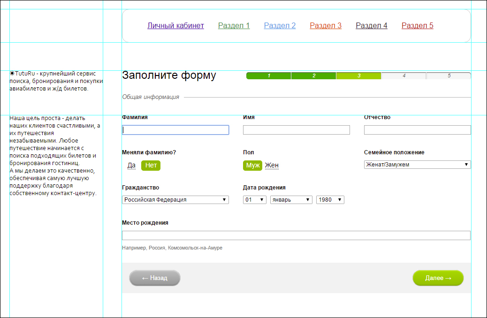

Для тестирования результатов своей работы я использую зоопарк браузеров на своем ПК. Работу в старых версиях IE проверяла с помощью режима эмуляции в IE11 + в нативном IE8 на древнем ноутбуке, где крутится WinXP. Для тестирования в последней верcии Safari, я использовала облачный сервис browserstack.com. В промышленной разработке вижу смысл в использовании набора виртуальных машин с разными браузерами (IE8, IE9, ..., Safari), либо платных аккаунтов на сервисах облачных сервисах кроссбраузерного тестирования. В работе я использую ПК с Win8.1, код пишу в WebStorm.
Компонент сверстан с помощью тега <input> типа radio. Так как внешний вид зависит от спрайта в формате .png его можно легко изменять и располагать на фоне различных цветов.
Самый простой способ сверстать прогресс-бар – использовать тег <progress>. Однако такой прогресс-бар будет неправильно отображаться в IE8 и IE9, поэтому я сверстала прогресс-бар с помощью тега <div>, role="progressbar" и aria-разметки. Этот метод лишен таких недостатков.
Копка была сверстана c помощью 6 различных тегов: a, span, div, input типа submit, input типа button и button. Размер кнопки можно изменить, добавив один из трех классов (.big, .normal или .small)
Перед началом работы я выполнила разметку, относительно которой в последствии верстала страницу. Так как форма сверстана не по столбцам, а по строкам, добавила тег <tabindex> для правильного перехода по tab
В зависимости от типа реализуемой задачи я бы выбрала один из этих методов:
Используя CSS свойство filter: blur(значение); возможно создать эффект размытости. Поддерживается браузерами: Firefox 38+, Chrome 31+, Safari 7.1+, а также всеми современными мобильными браузерами.
Плюсы:Данный способ поддерживается всеми браузерами
Плюсы: